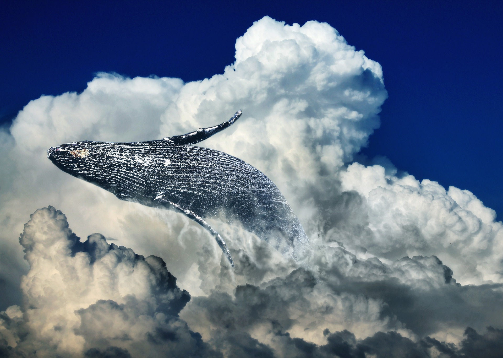

Bi Séries: Seleção de séries feita pra você
São tantas séries que às vezes fica difícil escolher uma para assistir, não é mesmo? Para você não perder tempo procurando, surgiu o site Bi Séries, preparando seleções de séries nas categorias Ficção científica, Fantasia e Natureza. Se você é apaixonado por séries, é só escolher alguma, preparar a pipoca, apertar play e se divertir.
Ficção científica

Ficção científica é um tema que fascina o ser humano desde os seus primórdios. Misturar o fantástico com conceitos de ciência é algo intrigante e resultou em grandes obras da cultura em geral.
Veja aqui.Fantasia
Os apaixonados por mundos fantásticos, eventos sobrenaturais e poderes mágicos têm agora uma boa seleção de produções para assistir.
Veja aqui.Natureza

Se você é amante da natureza, você definitivamente não pode deixar de conferir a lista das melhores séries com paisagens naturais e ambientes ao ar livre.
Veja aqui.